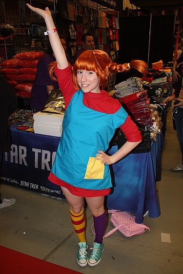

Pippi Långstrump

Persongalleri
- Pippi har största starkaste i världen. Hon kan till och med lyfta sin häst med den Lilla Gubben.
- Tommy och Annika Settergren, syskon, och Pippis grannar och bästa vänner.
De är, i kontrast till Pippi, mer lydiga och prydliga. De försöker hitta balansen
mellan att tillfredsställa föräldrarnas, sin egen och Pippis vilja.